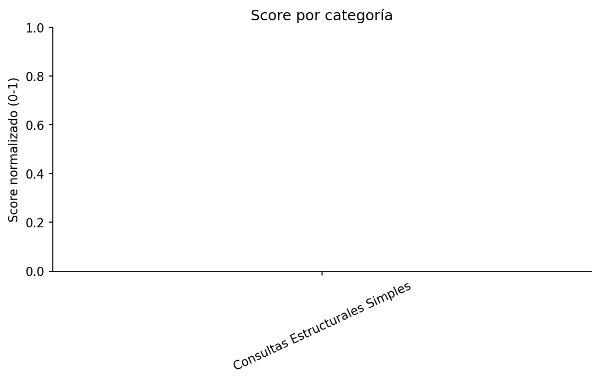
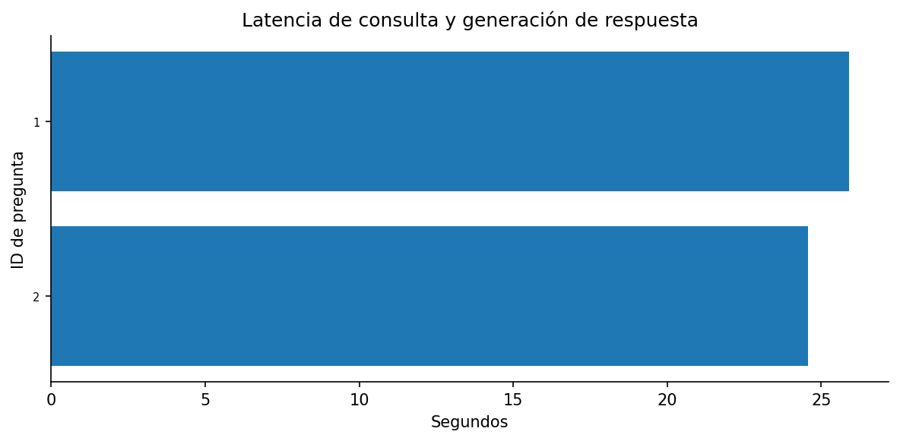

Preguntas: 2 ·
Juzgadas: 0 ·
Centinelas: 0 ·
Errores de consulta: 0 ·
Errores del juez: 0 ·
Juez: none/claude-opus-4-8
| Correctitud | Completitud | Fidelidad | Calidad global | Centinelas | Latencia media | Mediana | p95 |
|---|---|---|---|---|---|---|---|
| 0.000 | 0.000 | 0.000 | 0.000 | 0.000 | 25.23s | 25.23s | 25.83s |


| ID | Categoría | Pregunta | Calidad | Correctitud | Completitud | Fidelidad | Latencia | Centinela | Centinela OK | Chunks | Respuesta candidata | Cypher generada | Error |
|---|---|---|---|---|---|---|---|---|---|---|---|---|---|
| 1 | Consultas Estructurales Simples | ¿Quién es el investigador responsable del proyecto Web Warehouse de Datos Abiertos de Gobierno con gestión de calidad? | — | — | — | — | 25.89s | no | — | 0 | La consulta no puede responderse con la información del grafo. | MATCH (p:Proyecto)
WHERE toLower(p.titulo) CONTAINS 'web warehouse de datos abiertos de gobierno con gestion de calidad'
MATCH (i:Investigador)-[:PARTICIPO_EN {calidad: 'responsable'}]->(p)
OPTIONAL MATCH (ic:Chunk)-[:EXTRAIDO_DE]->(i)
RETURN i, COLLECT(DISTINCT ic) AS chunks | |
| 2 | Consultas Estructurales Simples | ¿En qué proyecto participó fernando carpani? | — | — | — | — | 24.56s | no | — | 0 | La consulta no puede responderse con la información del grafo. | MATCH (i:Investigador) WHERE toLower(i.nombre) CONTAINS 'fernando carpani' MATCH (i)-[:PARTICIPO_EN]->(p:Proyecto) OPTIONAL MATCH (p)-[:TITULO_EXTRAIDO_DE]->(c:Chunk) RETURN p, i, COLLECT(DISTINCT c) AS chunks |